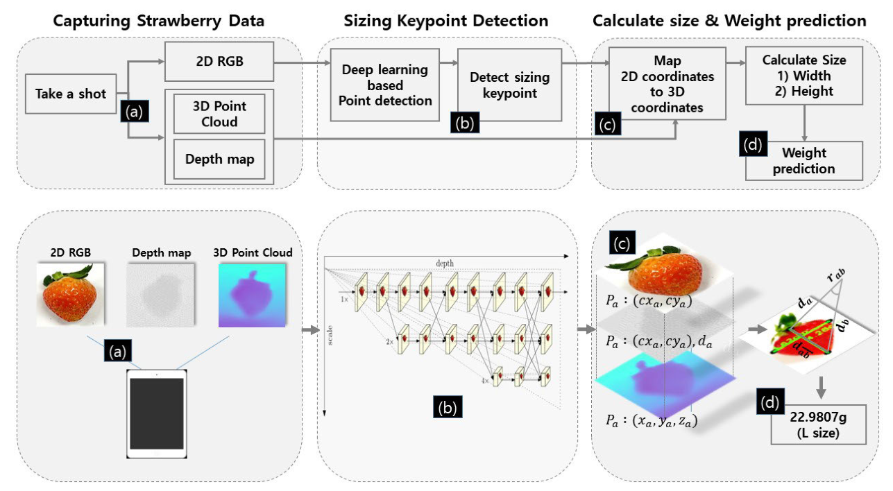
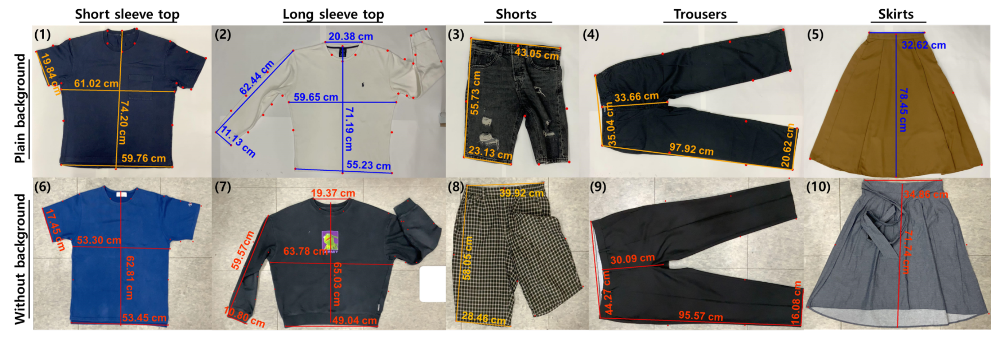
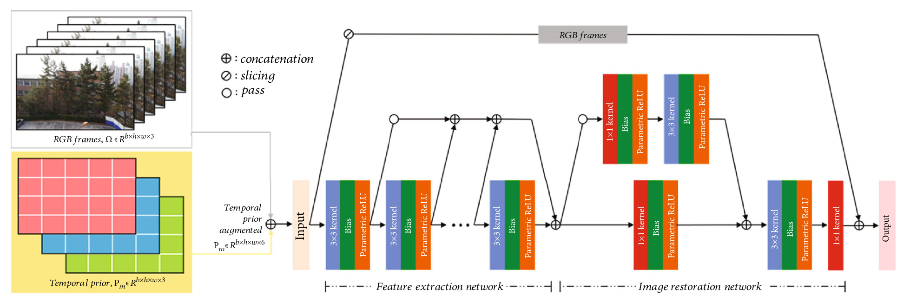
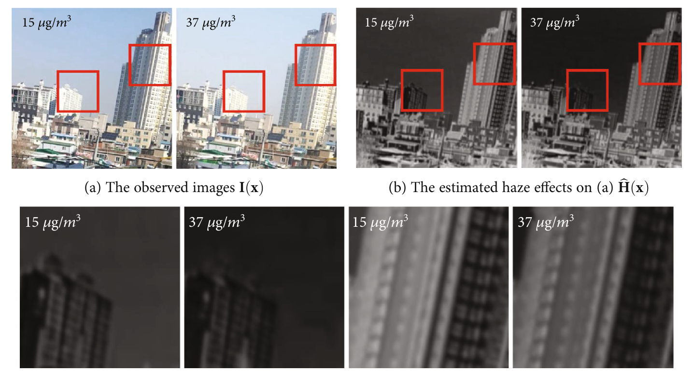
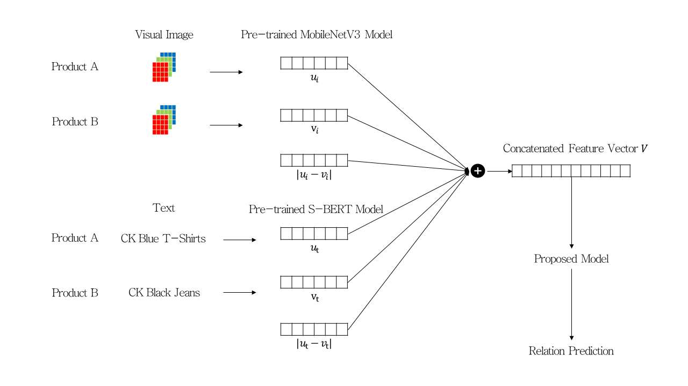
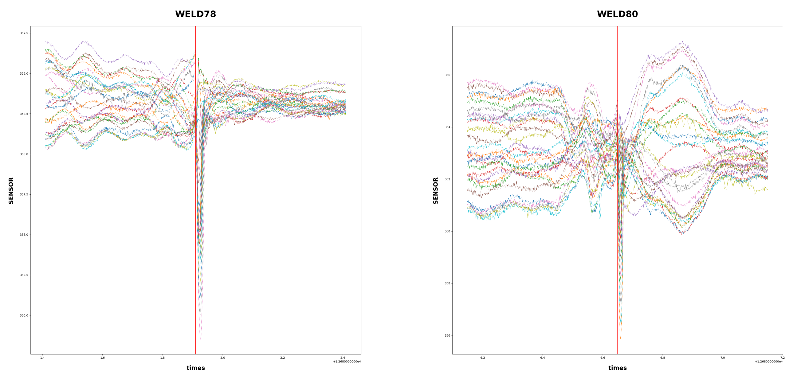
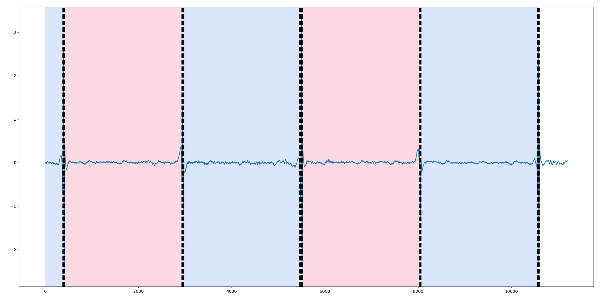

국가 R&D 과제 8건을 시간 순으로 늘어놓으면 하나의 흐름이 보입니다.
영상 분석에서 시작해 3차원 계측으로 옮겨간 뒤,
2023년부터는 같은 기술 축을 서로 다른 공고에 맞춰 다시
제안하는 방식으로 과제가 연달아 이어졌습니다. 이 문서는 그
흐름을 만든 판단과, 각 과제에서 실제로 맡았던 일을 정리한 것입니다.
기술 축 하나를 네 개 과제로 확장한 방식
모바일 LiDAR 기반 3차원 계측이라는 하나의 코어를 두고, 공고마다 요구가
다른 지점을 찾아 그 부분만 새로 설계하는 방식으로 제안했습니다. 기존
자산을 재사용하니 개발 위험이 낮았고, 매번 다른 도메인을 다루니 코어
자체가 함께 넓어졌습니다.
과제 · 공고의 요구
기술 축에서 새로 설계한 부분
산출물
옷 치수 자동 측정
중고 거래 활성화 · 2023.09
촬영 환경 통제와 참조물 없이도 재현되는 측정. 평면에 놓인 대상의
키포인트를 깊이 맵 경계선으로 보정하는 구조를 확립했습니다.
논문 · Appl.Sci.
업소용 기자재 사이즈 · 무게
소상공인 중고 거래 · 2024.10
길이만으로는 값이 나오지 않는 무게가 요구 지표였습니다. 측정한
길이를 설명변수로 쓰는 회귀식을 붙여 직접 재기 어려운 물성까지
추정하도록 확장했습니다.
논문 · IEEE Access
소아 · 청소년 비만 판정
모바일 헬스케어 · 2024.11
대상이 옷을 입은 인체로 바뀌면서 둘레 추정이 필요해졌습니다. 정면과
측면 계측값을 합치는 회귀 상수를 실측 데이터에서 도출해
적용했습니다.
논문 · Appl.Sci. / 특허
모바일 피부분석 AI
K-뷰티 초개인 맞춤화 · 2025.05
계측 대상이 얼굴의 미세 굴곡으로 내려가면서, 2차원 영상과 3차원
깊이를 융합해 부위별 주름을 검출하는 방법으로 재구성했습니다.
특허 등록
대표 성과
4건
모바일 LiDAR 기반 3차원 계측 및 속성 추정
2023.01 – 2026.06
국가 R&D 과제 4건 · 학술지 논문 3편 · 특허 2건이 이 축에서
나왔습니다
사진 한 장에는 거리 정보가 없어, 기존 방식은 자를 함께 찍거나 촬영
거리를 고정해야 실제 치수를 얻을 수 있었습니다. 현장에서 그 조건을
지키기 어렵다는 점이 과제의 출발점이었습니다. 딥러닝이 찾은 키포인트에
라이다 깊이를 매핑해 참조물 없이 치수를 산출하되, 2차원 키포인트가
3차원 공간의 실제 경계와 어긋나는 문제를 깊이 맵의 경계선으로
보정했습니다.
보정 전 19.2%였던 상대오차가 5%대로 떨어졌습니다.
3차원 메시를 복원하지 않는 구조라 스마트폰에서 실시간으로 동작했고, 같은
파이프라인을 의류 · 농산물 · 인체에 그대로 적용할 수 있었습니다.
의류 치수는 상대오차 1.6~2.1%로 수동 측정(3.25%)보다 정확했고, 딸기는
폭 오차 3.7%, 인체는 주요 부위 대부분에서 8% 이내였습니다.

파이프라인 촬영 → 키포인트 검출 → 2D-3D 좌표 매핑 → 크기
산출 및 무게 예측. IEEE Access, 2024

환경 변화 검증 배경을 통제한 경우와 통제하지 않은 경우의
의류 5종 측정 결과. Applied Sciences, 2022
Mobile LiDAR · 3D Point Cloud · HRNet · YOLOv6 · PyTorch ·
iPhone / iPad Pro on-device
영상 기반 미세먼지 농도 추정
2020.01 – 2021.01
첫 국가 R&D 과제 · 메릴랜드대학교 · NASA 고다드 우주비행센터와
공동 저술
국가 측정망은 정확하지만 설치와 유지 비용이 커서 도시에 몰려 있고,
그만큼 관측 사각지대가 생깁니다. 저비용 카메라로 그 공백을 메우는 것이
과제의 목적이었습니다. 기존 연구가 사진 한 장씩만 분석한 데 반해,
미세먼지는 공기 중을 떠다니는 입자라 시간에 따른 변화 자체가
정보라고 보고 연속 프레임의 픽셀별 평균을 시간적 사전정보로
만들어 원본과 함께 입력했습니다.
실외 상관계수가 0.72에서 0.82로 올랐고, 실내에서는 개선 폭이 작았습니다.
바람이 불어 입자가 실제로 유동하는 상황에서만 시간 정보가 기여한다는
뜻이었고, 이 해석을 논문에 그대로 실었습니다. 라즈베리 파이에서 돌아가도록
연산량을 조정해 과제가 요구한 저비용 조건을 맞췄습니다.

네트워크 구조 RGB 프레임과 시간적 사전정보를 결합해 입력하는
구성. Journal of Sensors, 2020

추정 결과 농도 15 / 37 μg/m³ 조건의 관측 영상과 추정된 헤이즈
성분 비교
Raspberry Pi · Python · OpenCV · Raspberry Pi 4B
시각 이미지와 메타데이터를 통합한 상품 추천
2021.01 – 2022.01
제1저자 논문 · 석사 학위논문의 토대
이미지만으로는 브랜드나 소재를 알 수 없고 텍스트만으로는 디자인을 알 수
없어, 두 정보를 결합했습니다. 설계의 핵심은 두 상품의 특징 벡터를 이어
붙이는 데 그치지 않고
차이의 절댓값을 함께 입력한 것입니다. 관계 판정에 필요한
유사도를 모델이 스스로 계산하게 두지 않고 직접 제공한 셈입니다.
이미지 단독 70.9%, 텍스트 단독 96.6%였던 정확도가 결합 시 98.2%가
되었습니다. 모바일 연산 제약을 전제로 MobileNetV3와 Sentence-BERT를
골랐고, 한국어와 영어가 섞인 데이터는 언어별로 모델을 분리했을 때와
통합했을 때를 비교 검증했습니다.

모델 구조 두 상품의 이미지 · 텍스트 특징과 각 차이의 절댓값을
이어 붙여 관계를 예측. Quant. Bio-Science, 2022
Python · PyTorch · MobileNetV3 · Sentence-BERT
로봇 센서 데이터 기반 가스배관 구간 탐지
2022.01 – 2023.01
모델을 키우는 대신 데이터의 구조를 다시 본 사례
배관 내부를 주행하는 로봇의 센서 신호만으로 접합부와 만곡부를 찾는
과제였습니다. 처음 적용한 다층 신경망이 성능을 내지 못했는데, 원인은
모델의 크기가 아니라 입력 크기가 고정되어야 한다는 구조적
제약이었습니다. 배관 구간은 길이가 제각각인데, 자르고 채우는
과정에서 신호가 왜곡되고 있었습니다.
입력 길이 제약이 없는 트리 기반 모델로 바꾸고, 분산 · 최대-최소 차이 ·
행 간 변화량 같은 파생변수로 가변 길이 구간을 고정 길이 벡터로
요약했습니다. 접합부를 먼저 찾고 그 사이를 만곡부 후보로 다시 정의하는
단계적 접근으로 문제를 나눴습니다.

원신호 접합부(붉은 선) 부근에서 다채널 센서 값이 급격히
흔들리는 구간

구간 분할 탐지한 접합부 경계로 구간을 나누고 만곡부 후보를 다시
정의한 결과
Python · Random Forest · LightGBM · time-series sensor data
산 · 학 · 연 협력 네트워크
공동 연구 · 과제 참여 기관
과제와 논문은 대부분 기관 사이에서 만들어졌습니다. 아래는 과제를 함께
수행했거나 논문을 함께 쓴 기관입니다.
건국대학교 산학협력단
학 · 관리
산학협력단을 통해 관리되는 과제에 참여하며 연구노트와 산출물 관리
체계를 경험
건국대학교 응용통계 · 환경보건과학 · 데이터사이언스 ·
스마트운행체공학과
학 · 연구
학과 간 공동 연구로 계측 · 생성모델 · 자율주행 논문을 함께 저술
육군사관학교 인공지능 · 데이터사이언스학과
학 · 연구
의류 치수 계측 논문 공동 저술, 적대적 샘플 취약점 대응 과제로 연계
광운대학교 컴퓨터정보공학과
학 · 연구
3차원 스캔 데이터의 제조 가능 형상 복원 연구 공동 저술 (IEEE
Access, 2026)
한양대학교 미래자동차공학과
학 · 연구
방역로봇 자율주행 과제의 강화학습 연구 공동 저술
서울대학교 IPAI · 전북대학교 치의학전문대학원
학 · 의료
치과 영상 데이터 증강 연구에서 임상 데이터와 판독 기준을 협의
메릴랜드대학교 지구시스템과학협동센터 · NASA 고다드 우주비행센터
해외
미세먼지 농도 추정 연구를 공동 저술 (Journal of Sensors, 2020)
수요기업 · 지자체
산 · 공
과제 요구사항 정의와 실증 협의, 현장 데이터 확보. 쓰레기 배출 감시
시스템은 구청과 협력해 수행
논문 13편의 연구 축
2020 – 2026
편수보다 축이 중요하다고 생각합니다. 13편을 주제로 묶으면 다섯 갈래가
되고, 그중 첫 갈래가 박사 연구와 과제 대부분의 중심입니다.
3차원 계측
의류(2022) → 농산물(2024) → 인체(2025). 대상이 평면에서 입체로,
정형에서 비정형으로 넓어지는 순서입니다.
박사 학위논문의 중심 · 과제 4건 · 특허 2건이 여기서 파생
멀티모달 결합
이미지 + 텍스트 결합으로 상품 관계 예측(2022, 제1저자) → 대규모
언어모델로 프롬프트를 확장해 앞뒤가 일관된 의류 이미지
생성(2025, 교신저자).
데이터 부족 대응
라벨이 적을 때의 준지도 분할(2023)과 생성모델을 이용한 의료 영상
증강(2023). 현장 과제에서 가장 자주 부딪히는 제약입니다.
계측 데이터의 보호
신체 치수는 그 자체가 민감정보입니다. 분산 저장(2024)과 분실 시
복구 메커니즘(2025)으로 이어졌습니다.
그 외
3차원 스캔 데이터의 형상 복원(2026), 영상 기반 미세먼지 추정(2020),
강화학습 리플레이 메모리(2020), 금융 차트 패턴 검출(2022).